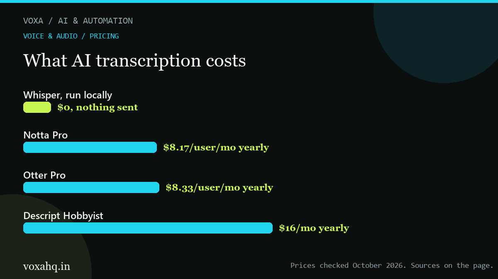

Best AI transcription tools for meetings, interviews and video

Updated October 7, 20266 min readPrices checked Oct 2026 6, Rev .99 per minute" width="1200" height="675" loading="lazy" decoding="async">Quick answer
Under about four hours of audio a month, pay per minute. Above that, a subscription wins. For private files, run Whisper locally and pay nothing.
- Rev charges .99 per audio minute for human transcription.
- Descript starts at
6/mo billed yearly and lets you edit video by editing the transcript.- HappyScribe: $8.50/mo yearly, or
2 per 60 minutes pay-as-you-go.- Notta $8.17/mo yearly, Otter $8.33/mo yearly, both with usable free tiers.
- Whisper is free and open source, and runs on your own machine.
Transcription pricing looks chaotic until you see there are only two models: pay per minute, or pay a monthly subscription that includes a fixed number of minutes. Which one is cheaper depends entirely on how many hours you actually process.
Rule of thumb: under about four hours a month, pay per minute. More than that, a subscription wins. And if your files are sensitive, recording them is a local problem, not a subscription problem.
Tool Free plan Paid from Best at Rev No $1.99 per audio minute for human transcription Legal, medical and research work where a person must check the file Descript Yes, limited $16/mo billed yearly ($24 monthly) Editing video and podcasts by editing the transcript HappyScribe Trial only $8.50/mo yearly, or $12 per 60 minutes pay-as-you-go Subtitles, translations and occasional files Notta 200 minutes a month $8.17/mo yearly ($13.49 monthly), 1,800 minutes Meetings plus summaries in one tool Otter 300 minutes a month $8.33/mo yearly ($16.99 monthly) Live meeting notes you can watch in real time Whisper (local) Free, open source Nothing, you run it yourself Private files, bulk archives, no per-minute cost Do the per-minute maths first
Ten hours of audio is 600 minutes. On Rev's human service that is a real invoice, because you are paying a person. On a $9-a-month subscription with 1,800 included minutes, the same job is nine dollars. That gap is why the per-minute option should be a deliberate choice for files that matter, not a default.
About accuracy claims
Every vendor quotes a number between 85% and 99%. What matters for you is different: do they get names, numbers, product terms and acronyms right, and do they handle people who talk over each other? Test with ten minutes of your own audio before committing a month of work to a tool.
Pick by job
Interviews and research: whatever is cheapest per minute, because you will read the text rather than publish it. HappyScribe's pay-as-you-go or a local Whisper setup both work.
Podcasts and video: Descript, because you edit the video by deleting words in the transcript. It is a different product from a plain transcriber and worth the extra.
Meetings: Otter or Notta, so the transcript arrives with a summary and action items attached. Both have free tiers that are generous enough to test with.
Subtitles and translations: HappyScribe, which handles subtitle styling and timing rather than just text.
Anything confidential: run Whisper on your own machine. Nothing leaves your laptop, there is no per-minute charge, and the trade-off is setup time and slower processing on big batches.
The local option is underrated
Whisper is open source and free. With a script or one of the desktop apps built on it, you can transcribe hours of audio without paying anyone, and without uploading client recordings to a third party. If you only need text, this is usually the cheapest path that exists, and the only one that keeps the audio private.
What we would pay for
One meeting tool with a decent free tier (Otter or Notta) for calls, plus either Descript at $16 a month if you publish video, or a local Whisper setup if you just need text and privacy. Pay-per-minute services make sense for the occasional file that legally has to be human-reviewed.
One note: AI pricing moves fast. We read these numbers off the vendors' own pricing pages in October 2026, so check the current price before you buy.
Where to check the current price
These are the official pages we read while writing this guide. Plain links, no tracking, no middlemen. If a number here disagrees with what you see, trust their page and tell us so we can fix it.
- Rev pricing
- Descript pricing
- HappyScribe pricing
- Notta pricing
- Otter pricing
- OpenAI Whisper (open source)
Frequently asked questions
Is it cheaper to pay per minute or subscribe?
Under roughly four hours of audio a month, pay per minute. Above that, a subscription with included minutes is almost always cheaper. Ten hours of audio on a $9 plan beats ten hours billed per minute by a wide margin.
How accurate is AI transcription really?
Vendors claim 85% to 99% for English, and real accuracy drops with accents, crosstalk and industry jargon. Test ten minutes of your own audio and count the errors in names and numbers before trusting it with anything client-facing.
Can I transcribe without uploading my files anywhere?
Yes. Whisper is open source and free to run locally, and desktop apps built on it give you a normal interface. Nothing leaves your machine, which matters for legal, medical and client recordings.
What is the difference between transcription and a meeting notetaker?
Transcription gives you text. A notetaker gives you text plus summaries, action items and integrations with your calendar or CRM. If you only need words, pay for transcription, not for the extra layer.
Do these tools handle multiple speakers?
Most identify speakers to some degree, but accuracy falls fast when people interrupt each other. Rev does not charge extra for multiple speakers on human transcription, which is one reason it stays in the picture for interviews.
- Descript starts at